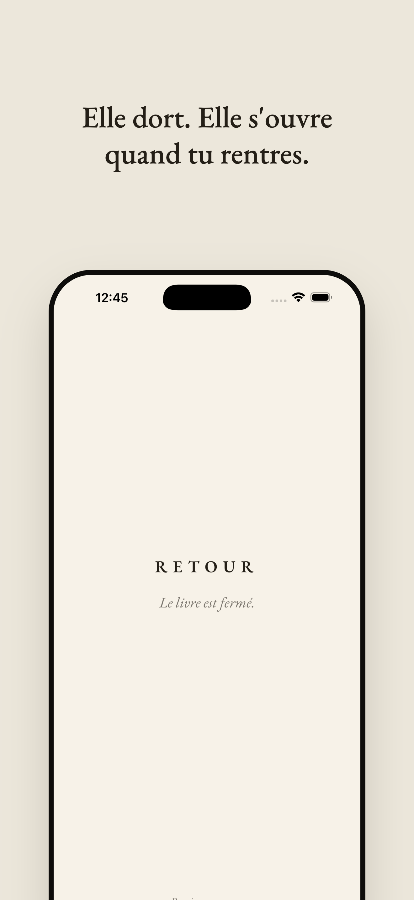
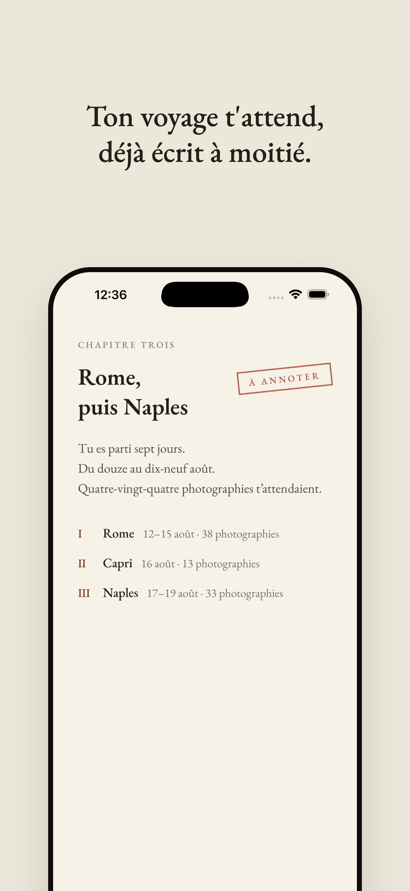
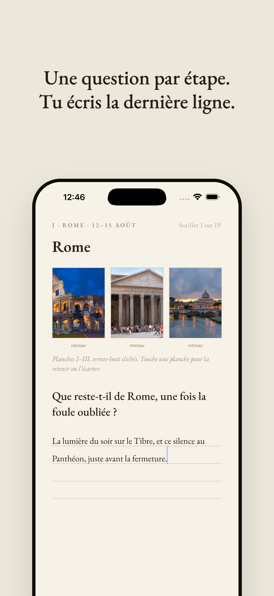
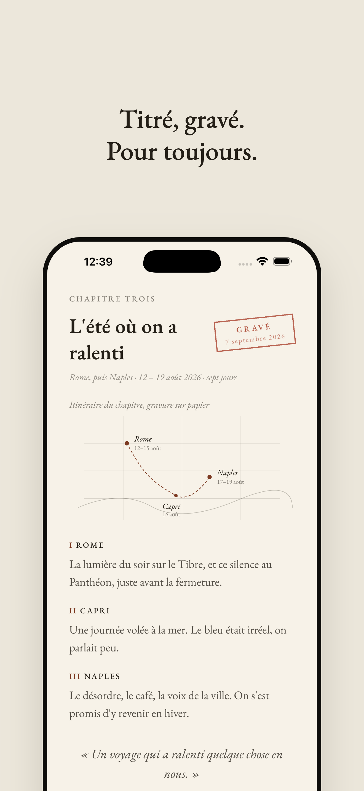

Retour est une app 100 % locale, sans backend ni compte. Elle dort, et se réveille d'elle-même au retour de voyage (géofencing : absence de plus de 48 h à plus de 50 km de la maison). Elle reconstruit alors le voyage depuis la photothèque (dates + GPS EXIF, rien ne quitte le téléphone) et le présente comme un chapitre de livre à annoter : une question littéraire par étape, des planches photo à retenir ou écarter. On donne un titre au voyage, puis le chapitre est gravé, immuable, tampon rouge type passeport. Les chapitres s'accumulent dans une bibliothèque : table des matières et planisphère. Gratuit, premier chapitre offert. Achat unique 4,99 € : Le livre complet.
Ce qu'elle fait- Détection automatique du retour de voyage (géofencing)
- Reconstruction du voyage depuis la photothèque (100 % local)
- Chapitre de livre à annoter, une question par étape
- Gravure immuable, tampon type passeport
- Bibliothèque : table des matières + carte des voyages
React NativeExpoTypeScriptExpo RouterGéolocalisation (géofencing)expo-media-library (EXIF)d3-geoStoreKit
Captures



